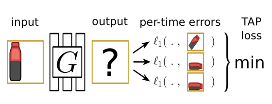
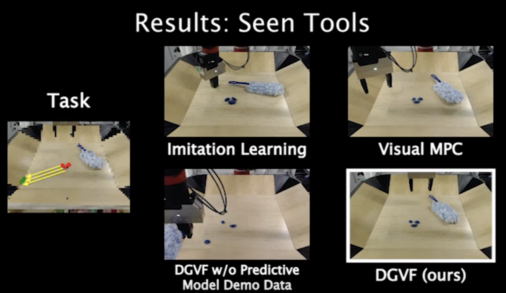
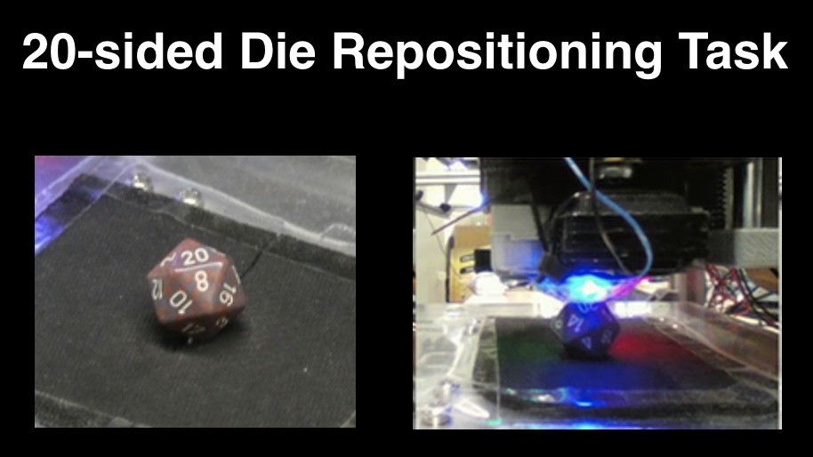
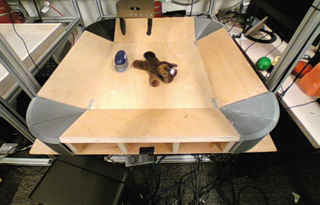
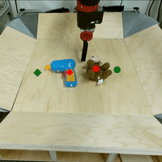

{kind=link}
Frederik Ebert
I'm a PhD student in Computer Science at UC Berkeley advised by Prof. Sergey Levine and part of the Berkeley Artificial Intelligence Laboratory (BAIR) . In my research I focus on the development of algorithms for robotic manipulation using techniques from deep learning, deep reinforcement learning and classical robotics.
I completed a Bachelor's degree in mechatronics and information technology and a master's degree in "Robotics Cognition Intelligence" at TU Munich (TUM).
Previously I have worked at the mechatronics institute of the German Aerospace Center (DLR) on the mechanical design and control system of a quadruped robot.
Robotic Interaction Datasets
We are maintaining a growing database of open robotic interaction datasets, which you can find here.Blog Posts
- Robots that Learn to Use Improvised Tools: how robots can figure out how to solve tasks using tools, including unconventional tools, by learning from a combination of unsupervised interaction and example demonstrations.
- Manipulation By Feel: how we can use visual foresight to enable robots to manipulate objects entirely by feel without vision.
- Visual Model-Based Reinforcement Learning as a Path towards Generalist Robots: overviews our work on learning a single model that can be used to accomplish many different tasks, without requiring human supervision.
Publications
|

|
Time-Agnostic Prediction: Predicting Predictable Video Frames Time agnostic prediction (TAP) is a method for predicting intermediate images in between a start frame and a goal frame for the purpose of planning. Instead of predicting at fixed time-intervals the optimizer chooses the optimal time-step. |
|

|
Improvisation through Physical Understanding: Using Novel Objects as Tools with Visual Foresight We combine diverse demonstration data with self-supervised interaction data, aiming to leverage the interaction data to build generalizable models and the demonstration data to guide the model-based RL planner to solve complex tasks. |

|
Manipulation by Feel: Touch-Based Control with Deep Predictive Models We propose deep tactile MPC, a framework for learning to perform tactile servoing from raw tactile sensor inputs, without manual supervision. We show that this method enables a robot equipped with a GelSight-style tactile sensor to manipulate a ball and 20-sided die |
|


|
Robustness via Retrying: Closed-Loop Robotic Manipulation with Self-Supervised Learning To enable a robot to continuously retry a task, we devise a self-supervised algorithm for learning image registration, which can keep track of objects of interest for the duration of the trial. We demonstrate that this idea can be combined with a video-prediction based controller to enable complex behaviors to be learned from scratch using only raw visual inputs, including grasping, repositioning objects, and non-prehensile manipulation. |
|

|
Self-Supervised Visual Planning with Temporal Skip Connections We present three simple improvements to self-supervised visual foresight algorithm that lead to substantially better visual planning capabilities. Our method can perform tasks that require longer-term planning and involve multiple objects. |
© 2018 Frederik Ebert